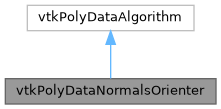

|
MUSICardio 4.2
MUSICardio application created by Inria Epione, IHU LIRYC and Université de Bordeaux
|
Loading...
Searching...
No Matches
|
MUSICardio 4.2
MUSICardio application created by Inria Epione, IHU LIRYC and Université de Bordeaux
|


Public Member Functions | |
| void | SetOrientationMatrix (vtkMatrix4x4 *matrix) |
Static Public Member Functions | |
| static vtkPolyDataNormalsOrienter * | New () |
Protected Member Functions | |
| virtual int | RequestData (vtkInformation *request, vtkInformationVector **inputVector, vtkInformationVector *outputVector) |